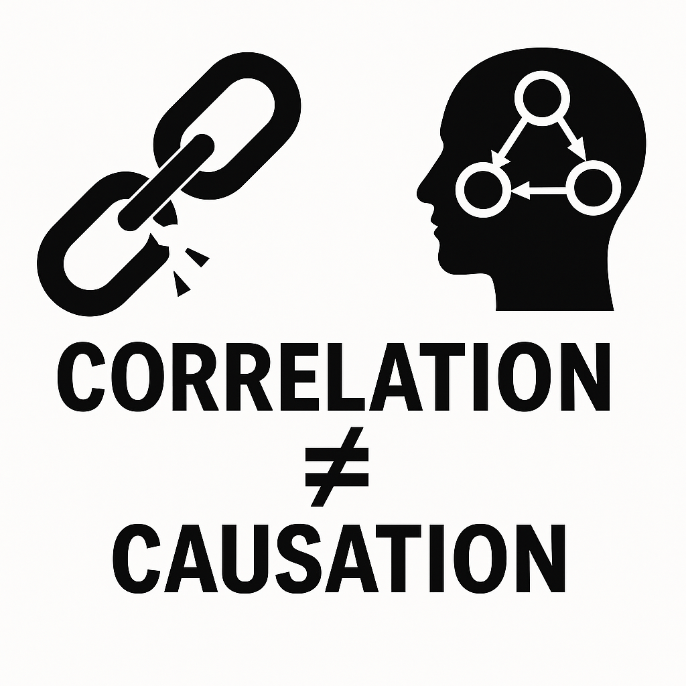
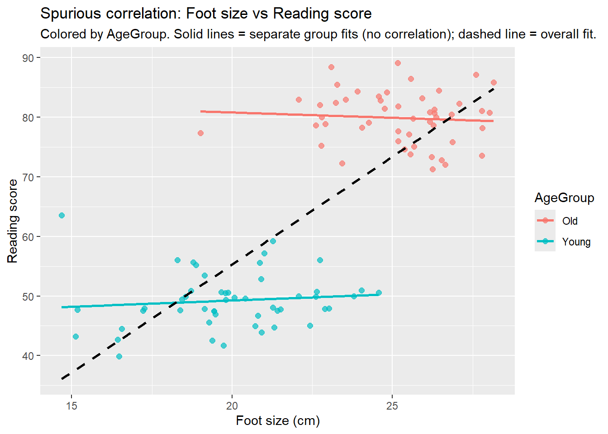

Correlation vs Causation: Understanding the Difference
Statistics
Correlation
Causation
Econometrics
Causal Inference
Public Health
Author
M. Fatih Tüzen
Published
June 4, 2025

1 Introduction
“Correlation is not causation” – it’s a refrain we hear often, yet the distinction between these concepts is deceptively easy to overlook. Correlation refers to a statistical association: when one variable changes, another tends to change as well. Causation, on the other hand, means a change in one variable directly produces a change in another. In other words, there is a cause-and-effect relationship. A crucial insight (sometimes phrased as “causation implies correlation (but not vice versa)”) is that while causation always entails some correlation, observing a correlation by itself does not prove causation. This article will explore the theoretical basis of correlation and causation, illustrate the difference with real-world examples in economics and healthcare, and demonstrate with R code how misleading correlations can arise – and how we can attempt to control for confounding factors. Along the way, we’ll dispel common misconceptions and share expert insights to encourage critical thinking about causal claims in data.
Judea Pearl, a pioneer of modern causal inference, put it succinctly: “Correlation is not causation; merely observing a relationship between variables does not imply a causal connection”. In practical terms, correlation is a symmetric relationship – X and Y vary together – whereas causation is directional: X produces Y. If two things are correlated, there are several possibilities: X causes Y, Y causes X, or some other factor influences both (or it could even be a chance coincidence). As statistician David Freedman warned, “Misinterpreting correlation as causation can lead to erroneous conclusions and misguided actions”. To use data responsibly, we must dig deeper than surface-level associations.
2 Theoretical Background: Correlation in a Nutshell
In statistics, correlation is often measured by the Pearson correlation coefficient (usually notated r). Mathematically, for variables X and Y, this coefficient is defined as:
where Cov(X,Y) is the covariance and σ denotes standard deviations. This value ranges from –1 (perfect negative correlation) to +1 (perfect positive correlation). An r near 0 indicates no linear relationship. Correlation captures how closely two variables move in sync. For example, if higher values of X tend to coincide with higher values of Y (and lower with lower), the correlation is positive. If one tends to go up when the other goes down, the correlation is negative. Crucially, correlation is a descriptive statistic – it quantifies an association, but it does not explain why the variables are related.
Correlation alone is silent on mechanism. It answers “Are X and Y related?” not “Does X change Y?”. To establish causation, we usually rely on theory, controlled experiments, or advanced observational study designs. In the language of causality, we think about interventions: if we do something to X, does Y change as a result? This is fundamentally a different question than observing X and Y moving together. Empirically, evidence of causation typically requires satisfying conditions such as temporal precedence (cause precedes effect), a credible mechanism linking X to Y, consistency with other evidence, and ruling out alternative explanations (confounders).
3 Why Correlation ≠ Causation: Confounders, Coincidences, and Reverse Causality
If correlation doesn’t imply causation, what might be going on when two variables track together? There are a few common scenarios:
Confounding (Third Variables): A hidden factor influences both variables. This lurking variable makes X and Y move together, creating an illusion that they’re directly linked. Classic example: children’s shoe sizes are strongly correlated with their reading ability. Obviously, bigger shoes don’t make kids read better. The confounder is age: older children have larger feet and also read more proficiently – age drives both. Once age is taken into account, the shoe size–reading correlation disappears. As Pearl humorously noted, “The third variable problem highlights the danger of assuming causation based solely on correlation”. We’ll demonstrate a confounding example with R shortly.
Pure Coincidence (Spurious Correlations): With enough data, you’re bound to find some weird correlations by chance alone. In fact, whole websites are devoted to absurd correlations. Tyler Vigen’s famous collection of spurious correlations highlights gems like a 0.95 correlation between U.S. per capita cheese consumption and the number of people who died by becoming tangled in their bedsheets. It’s a comical reminder that with countless variables in the world, some will line up in sync purely by accident. High correlation can occur in entirely unrelated data — a cautionary tale for data miners. We should always ask: Is there a plausible reason for this correlation, or could it be random?
Reverse Causation (Directionality): Sometimes X and Y truly are causally related, but not in the direction one assumes. For example, suppose data show a correlation between depression and low vitamin D levels. Does lack of vitamin D cause depression, or do depressed individuals tend to get less sunlight and thus have lower vitamin D? The data alone can’t tell us the direction. Another example: cities with more police officers tend to have higher crime rates. This doesn’t mean police cause crime; rather, high-crime areas hire more police. In economic contexts, we’ll see debates like “Do higher interest rates reduce inflation, or is it that rising inflation prompts central banks to raise rates?” – in such cases, cause and effect can be easily confused if we only look at correlations.
Selection Bias and Other Pitfalls: In observational data, how samples are collected can also create misleading correlations. For instance, a medical study might find that patients on a certain medication have higher survival rates – but if those patients were also healthier or younger on average (selection bias), the medication’s effect is confounded. Correlation can even vanish or flip sign when data is disaggregated, a phenomenon known as Simpson’s Paradox. The aggregate data might show one trend, while each subgroup shows the opposite trend. This often indicates a confounding variable at play.
3.1 Simulating a Spurious Correlation in R
To make these ideas concrete, let’s simulate an example in R. We’ll create a scenario with two groups (“Young” and “Old”) where within each group, there is no relationship between our variables, but when we combine the groups, we observe a strong correlation. This mimics a confounding situation (here, age group is the confounder).
# Simulate data for two groups: 'Young' and 'Old'set.seed(42)AgeGroup <-rep(c("Young", "Old"), each =50)# For Young group, generate foot_size and reading_score with no true correlationfoot_size <-c(rnorm(50, mean =20, sd =2), # Young have smaller feet on averagernorm(50, mean =25, sd =2)) # Old have larger feet on averagereading_score <-c(rnorm(50, mean =50, sd =5),# Young have lower reading scores on avgrnorm(50, mean =80, sd =5))# Old have higher reading scores on avg# Check correlationscor(foot_size, reading_score) # overall correlation
[1] 0.7597618
cor(foot_size[AgeGroup=="Young"], reading_score[AgeGroup=="Young"]) # within Young group
[1] 0.1043372
cor(foot_size[AgeGroup=="Old"], reading_score[AgeGroup=="Old"]) # within Old group
[1] -0.07429122
Running the code above, we might find an overall Pearson correlation around ~0.75 between foot_size and reading_score for all 100 individuals combined. Yet within each age group separately, the correlation is near 0 (essentially no relationship). In our simulation, foot size was not actually affecting reading ability at all – the apparent overall correlation arose because the Old group had higher values for both variables than the Young group. Age group was the lurking factor. This is a toy example of Simpson’s Paradox, where aggregation masks the true story.
We can visualize this:
# Plot the data, coloring by group, and add regression lineslibrary(ggplot2)df <-data.frame(AgeGroup, foot_size, reading_score)ggplot(df, aes(x = foot_size, y = reading_score, color = AgeGroup)) +geom_point(size =2, alpha =0.7) +geom_smooth(method ="lm", se =FALSE) +geom_smooth(aes(group =1), method ="lm", se =FALSE, color ="black", linetype ="dashed") +labs(x ="Foot size (cm)", y ="Reading score",title ="Spurious correlation: Foot size vs Reading score",subtitle ="Colored by AgeGroup. Solid lines = separate group fits (no correlation); dashed line = overall fit.")

Interpretation:In the plot, blue points (younger kids) cluster toward the lower-left, and red points (older kids) cluster at the upper-right. The black dashed line through all data has a clear upward slope, indicating a positive overall correlation. However, the solid trend lines fitted to each group are nearly flat – within each group there’s no meaningful correlation between foot size and reading skill. It’s the group difference (older children are both larger and more literate) that created the misleading overall association. This example underscores why we must be cautious: if we naively observed all the data, we might have (laughably) concluded that “big feet cause better reading”! Only by accounting for the confounding variable (age) do we see the true picture.
Figure: An example of spurious correlation. Each point is an individual child; foot size and reading score are uncorrelated within the Young (blue) and Old (red) groups, but when pooled together there is a strong positive correlation. The overall trend (black dashed line) is entirely driven by the age-group effect. Such patterns illustrate how a lurking variable can create a misleading correlation.
4 Real-World Example 1: Interest Rates and Inflation
One arena where correlation vs causation debates rage is macroeconomics. Consider interest rates and inflation – two metrics that often move in tandem. Central banks (like the U.S. Federal Reserve or Bank of England) adjust interest rates as a policy tool, aiming to control inflation. Intuition says raising interest rates should cause inflation to decrease (by cooling off spending and investment). Indeed, periods of tight monetary policy often coincide with inflation coming down. But does that correlation mean the rate hikes caused the relief in inflation? Not necessarily. As one economics blogger noted during the 2022–2023 inflation surge: “One might be tempted to draw a direct line between higher interest rates and lower inflation rates. But correlation does not necessarily imply causation.” In that episode, global inflation started easing after its 2022 peak, at the same time central banks were aggressively raising rates. However, careful analysis suggested much of the inflation decline was due to resolving supply chain issues and falling commodity prices – factors largely independent of interest rate moves. In other words, inflation would have started abating on its own as pandemic-era supply shocks faded, even if interest rates had not been hiked so sharply. The overlap in timing was a correlation, not a definitive proof of causation.
Economists have to untangle these relationships with statistical tools and historical data. One approach is to look at lead-lag relationships: if interest rate changes truly cause lower inflation, we’d expect to see inflation consistently drop a few quarters after rate hikes. If instead we observe that inflation spikes often precede rate hikes (as central banks react to rising inflation), that indicates reverse causation – inflation causing interest rate changes. Studies of the UK economy, for instance, found that in the short run, raising interest rates sometimes correlated with higher inflation in subsequent quarters. This counter-intuitive positive correlation could mean that initial rate hikes were implemented when inflation was already rising (so inflation kept climbing shortly after), or that rate hikes had supply-side effects (e.g. raising business costs) that temporarily stoked inflation. Only after a longer time lag did the correlation turn negative as expected (inflation easing modestly) – and even then, the effect was statistically weak in some analyses. An outside observer summed up the mixed evidence wryly: “If correlation means causality then possibly not. [Rate hikes] may have an effect, but the effect might be weak on inflation and brutal on society”. In other words, simply correlating past interest increases with inflation outcomes can be misleading; it takes careful modeling to isolate the causal impact (and it might be smaller than popularly assumed).
This example highlights two key points: First, directionality matters – are we seeing X→Y or Y→X or both? (In economics, feedback loops are common: inflation could prompt rate changes, which in turn influence future inflation, a two-way causality.) Second, confounding variables abound – other factors like global supply conditions, fiscal policy, or consumer expectations can drive inflation, obscuring the effect of interest rates. Analysts tackle these challenges with techniques such as Vector Autoregression (VAR) models, instrumental variables, or by “clustering” data to compare similar periods or countries. A commenter on an economics forum pointed out that failing to control for such factors is akin to falling for Simpson’s Paradox: “Plotting inflation vs interest rates can be misleading unless you cluster to avoid confounding variables”. The lesson: even in highly data-driven fields like economics, correlation alone can support multiple stories, and solid conclusions require digging into the causal structure of the problem.
5 Real-World Example 2: Vaccines and Disease Prevalence
Few areas demonstrate the difference between correlation and causation as starkly as healthcare and epidemiology. Let’s examine vaccines and disease rates. Vaccines are designed based on a known causal mechanism (they induce immunity, which prevents disease), and countless studies and trials have validated their efficacy. Thus, when a vaccine is introduced, we expect disease incidence to drop as a causal result. Conversely, if vaccination rates fall, diseases can surge. Both correlations have been observed in reality – one led to a life-saving public health success, the other to a dangerous resurgence of disease – and they underline why understanding causality is critical.
Correlation used as evidence of causation (correctly): In the 1950s, polio was a dreaded disease paralyzing tens of thousands each year. In 1955, the Salk polio vaccine was introduced. Within just a few years, polio cases plummeted. In the United States, annual polio cases dropped from ~58,000 to about 5,600 by 1957, and only 161 cases by 1961. The timing and magnitude of this drop, alongside laboratory and clinical evidence, provided convincing proof that the vaccine caused the decline in polio. Here the correlation (vaccine rollout followed by disease collapse) was no coincidence – it was a predicted outcome based on a causal understanding of immunity. As another example, when the HPV vaccine was introduced, health officials observed sharp declines in HPV infections and related cancers in subsequent years, consistent with the expected causal effect of vaccinating adolescents. In such cases, correlation was a strong hint that led scientists to conclude causation, bolstered by controlled trials and biological plausibility.
Correlation misinterpreted as causation (incorrectly): Not all observed links are what they seem. A notorious case was the now-debunked claim that the MMR (measles, mumps, rubella) vaccine caused autism in children. This idea stemmed from a 1998 study (later found fraudulent) and the anecdotal observation that autism diagnoses were often made around the same age children receive lots of vaccines. In truth, the apparent correlation was driven by coincidental timing and increased awareness/diagnosis of autism in the 1990s – not by vaccines. Extensive research over decades showed no causal link: “Research over the past 15 years has shown that childhood vaccines don’t cause autism”. Unfortunately, the fear incited by the false correlation led many parents to avoid the MMR vaccine. The result? Measles, once near-eliminated, came roaring back. Great Britain, for instance, experienced a measles epidemic in the 2000s as vaccination rates fell. Public health officials directly attributed this to the drop in vaccinations after the autism scare: “Great Britain is in the midst of a measles epidemic, one that public health officials say is the result of parents refusing to vaccinate their children after a safety scare that was later proved to be fraudulent”. In regions where MMR vaccination rates fell below about 80%, measles cases spiked dramatically. One commentator lamented, “This is the legacy of the Wakefield scare”. The correlation here – lower vaccination accompanied by higher disease incidence – reflected a causal relationship, but in the opposite direction of the original false claim. Vaccines prevent measles, so when vaccination dropped, measles returned. It’s a sobering example of how a misunderstood correlation (vaccines and autism) led to behaviors that revealed a very real causation (lack of vaccines causing disease outbreaks).
In summary, the vaccine story teaches us that we must have external evidence and domain knowledge to distinguish meaningful correlations from spurious ones. When strong theory and additional evidence support a correlation (as with vaccines preventing disease), we can infer causation with confidence. But when a correlation flies in the face of established knowledge or lacks a plausible mechanism (as with vaccines causing autism), it demands deep skepticism and further investigation. Correlation may open the door to a hypothesis, but only rigorous science can confirm causality.
6 From Correlation to Causation: How Can We Tell?
So, if correlation alone isn’t enough, how do scientists and statisticians actually establish causation? This is the realm of causal inference, and entire textbooks (and careers) are devoted to it. Here we’ll outline a few key principles and methods:
Controlled Experiments: The gold standard for testing causality is the randomized controlled trial (RCT). By randomly assigning subjects to a treatment (X) or control, we ensure no systematic confounders differ between groups. Any difference in outcomes (Y) can then be attributed to X (within known statistical error). As statistician Paul Rosenbaum emphasizes, “Experimental design is crucial for establishing causal relationships and overcoming confounding factors”. In fields like medicine, RCTs are required to claim a drug causes an effect. In more complex domains (economics, social sciences) where RCTs may be infeasible or unethical, researchers look for natural experiments or instrumental variables to approximate that level of control.
Temporal Checks: Ensure the cause precedes the effect. Sounds obvious, but it’s a simple way to weed out some mistaken causal interpretations. If Y happens before X, X cannot be the cause. Sometimes lagged correlations or time-series analyses (like Granger causality tests in economics) are used to see if changes in X consistently come before changes in Y. In our interest rate example, analysts examined whether inflation tended to drop after interest rate hikes (and found mixed results, indicating caution in the causal claim).
Controlling for Confounders: In observational studies, a common strategy is to measure possible confounding variables and include them in a regression or stratify the analysis. For instance, if we suspect age is a confounder in our earlier example, we can compare individuals of similar age (or include age in a multiple regression model) to see if foot size still correlates with reading ability within those strata. If the correlation vanishes after controlling for the third variable, it was likely spurious. Techniques like multiple regression, matching, propensity score adjustment, and difference-in-differences analysis are all about simulating a “ceteris paribus” condition – i.e. comparing like with like, so that the effect of interest can be isolated. In R, one might use lm() (linear modeling) to adjust for confounders. For example, lm(reading_score ~ foot_size + Age, data=df) would tell us if foot_size still has any predictive power for reading_score once Age is accounted for. (In our simulated data, it would show foot_size is not significant when Age is included, reinforcing that foot size itself wasn’t causing better reading.)
Multiple Studies and Triangulation: We gain confidence in causation when multiple independent studies, using different methods, consistently point to the same conclusion. If correlational evidence is supported by lab experiments, longitudinal studies, and perhaps natural experiments, the case for causality strengthens. In the smoking and lung cancer example: early on, skeptics said “correlation is not causation” – maybe smokers had other habits causing cancer. But over time, mountains of evidence (animal experiments, biological mechanisms, epidemiological studies controlling for diet, etc.) converged to establish that smoking does cause cancer.
Plausibility and Mechanism: A correlation accompanied by a plausible mechanism is more convincing. If we can explain how X could influence Y (through physics, biology, or logic), we are more likely to consider X a potential cause of Y. In contrast, if no one can conceive a realistic way that X would affect Y, we suspect a lurking variable or coincidence. (For instance, it’s hard to imagine how eating more cheese would directly cause strangulation by bedsheets – more likely, as one humorous analysis noted, it’s just an “accidental, misleading pattern” or related to a confounder like time or lifestyle).
Causal Graphs and Models: Modern data science sometimes employs causal graphs or Bayesian networks (à la Judea Pearl’s do-calculus) to formally model assumptions about causation and test if the observed correlations fit a causal structure. While beyond the scope of this article, these tools provide a framework to encode “X causes Y” assumptions and see what observational patterns should emerge if that’s true. They also help identify what additional data or experiments are needed to distinguish between competing causal hypotheses.
In practice, determining causation is often like solving a puzzle. We marshal all available evidence, use critical thinking, and sometimes still end up with uncertainty. However, the effort is worthwhile because acting on false causal assumptions can be costly. Misattributing causation can lead to bad policy, ineffective or harmful interventions, or simply wasting resources chasing the wrong problem. As we’ve seen, data should be approached with a skeptical eye. Correlations can be tantalizing – they can indeed be hints to causal relationships – but we must verify those hints. By combining statistical rigor with domain expertise, we improve our chances of getting the causation right.
7 Conclusion
Understanding the difference between correlation and causation is essential for anyone who consumes data-driven information (which these days is all of us). We’ve covered how correlation is a mathematical relationship that can flag interesting connections but can also mislead us through confounding, coincidence, or reversed cause-and-effect. We explored examples from economics and healthcare where these distinctions have real-world consequences – from guiding central bank policies to informing public health decisions. The key takeaway is to think critically: when you hear that X is linked to Y, ask why and how. Look for evidence that goes beyond the raw correlation. As the saying goes (often attributed to many scientists), “Correlation is not causation, but it sure is a hint.” Use the hint to investigate further, not to jump to conclusions.
In the words of statistician David Freedman, misinterpreting correlation as causation is not just an academic error but one that can lead to “misguided actions”. By staying curious and skeptical – and by leveraging tools like R to analyze data properly – we can uncover the true stories our data are telling us. Correlation can open the door to discovery, but only rigorous analysis and critical thinking will reveal what’s inside.
---title: "Correlation vs Causation: Understanding the Difference"author: "M. Fatih Tüzen"date: "2025-06-04"categories: [Statistics, Correlation, Causation, Econometrics, Causal Inference, Public Health]execute: warning: false message: falseformat: html: toc: true toc-depth: 3 number-sections: true code-fold: false code-tools: true code-overflow: scroll code-block-background: true---{fig-align="center" width="900"}## Introduction“Correlation is not causation” – it’s a refrain we hear often, yet the distinction between these concepts is deceptively easy to overlook. Correlation refers to a statistical association: when one variable changes, another tends to change as well. Causation, on the other hand, means a change in one variable *directly produces* a change in another. In other words, there is a cause-and-effect relationship. A crucial insight (sometimes phrased as *“causation implies correlation (but not vice versa)”*) is that while causation *always* entails some correlation, observing a correlation by itself **does not prove causation**. This article will explore the theoretical basis of correlation and causation, illustrate the difference with real-world examples in economics and healthcare, and demonstrate with R code how misleading correlations can arise – and how we can attempt to control for confounding factors. Along the way, we’ll dispel common misconceptions and share expert insights to encourage critical thinking about causal claims in data.> [**Judea Pearl**](https://blog.gopenai.com/disentangling-causation-and-correlation-in-data-analysis-bbb60a2e1dd2), a pioneer of modern causal inference, put it succinctly: *“Correlation is not causation; merely observing a relationship between variables does not imply a causal connection”.* In practical terms, correlation is a symmetric relationship – X and Y vary together – whereas causation is directional: X produces Y. If two things are correlated, there are several possibilities: X causes Y, Y causes X, or some other factor influences both (or it could even be a chance coincidence). As statistician [**David Freedman**](https://blog.gopenai.com/disentangling-causation-and-correlation-in-data-analysis-bbb60a2e1dd2) warned, *“Misinterpreting correlation as causation can lead to erroneous conclusions and misguided actions”*. To use data responsibly, we must dig deeper than surface-level associations.## Theoretical Background: Correlation in a NutshellIn statistics, correlation is often measured by the Pearson correlation coefficient (usually notated *r*). Mathematically, for variables X and Y, this coefficient is defined as:$$r_{XY} = \frac{\\Cov(X,Y)}{\sigma_X \sigma_Y}$$where Cov(X,Y) is the covariance and σ denotes standard deviations. This value ranges from –1 (perfect negative correlation) to +1 (perfect positive correlation). An *r* near 0 indicates no linear relationship. Correlation captures how closely two variables move in sync. For example, if higher values of X tend to coincide with higher values of Y (and lower with lower), the correlation is positive. If one tends to go up when the other goes down, the correlation is negative. Crucially, correlation is a descriptive statistic – it quantifies an association, **but it does not explain why** the variables are related.*Correlation alone is silent on mechanism.* It answers “Are X and Y related?” not “Does X change Y?”. To establish causation, we usually rely on theory, controlled experiments, or advanced observational study designs. In the language of causality, we think about interventions: if we *do* something to X, does Y change as a result? This is fundamentally a different question than observing X and Y moving together. Empirically, evidence of causation typically requires satisfying conditions such as temporal precedence (cause precedes effect), a credible mechanism linking X to Y, consistency with other evidence, and ruling out alternative explanations (confounders).## Why Correlation ≠ Causation: Confounders, Coincidences, and Reverse CausalityIf correlation doesn’t imply causation, what might be going on when two variables track together? There are a few common scenarios:- **Confounding (Third Variables):** A hidden factor influences both variables. This *lurking variable* makes X and Y move together, creating an illusion that they’re directly linked. Classic example: children’s shoe sizes are strongly correlated with their reading ability. Obviously, *bigger shoes don’t make kids read better*. The confounder is age: older children have larger feet and also read more proficiently – age drives both. Once age is taken into account, the shoe size–reading correlation disappears. As Pearl humorously noted, *“The third variable problem highlights the danger of assuming causation based solely on correlation”*. We’ll demonstrate a confounding example with R shortly.- **Pure Coincidence (Spurious Correlations):** With enough data, you’re bound to find some weird correlations by chance alone. In fact, whole websites are devoted to absurd correlations. **Tyler Vigen’s** famous collection of spurious correlations highlights gems like a 0.95 correlation between U.S. per capita cheese consumption and the number of people who died by becoming tangled in their bedsheets. It’s a comical reminder that with countless variables in the world, some will line up in sync purely by accident. High correlation can occur in entirely unrelated data — a cautionary tale for data miners. We should always ask: *Is there a plausible reason for this correlation, or could it be random?*- **Reverse Causation (Directionality):** Sometimes X and Y truly are causally related, but not in the direction one assumes. For example, suppose data show a correlation between depression and low vitamin D levels. Does lack of vitamin D cause depression, or do depressed individuals tend to get less sunlight and thus have lower vitamin D? The data alone can’t tell us the direction. Another example: cities with more police officers tend to have higher crime rates. This doesn’t mean police cause crime; rather, high-crime areas hire more police. In economic contexts, we’ll see debates like *“Do higher interest rates reduce inflation, or is it that rising inflation prompts central banks to raise rates?”* – in such cases, cause and effect can be easily confused if we only look at correlations.- **Selection Bias and Other Pitfalls:** In observational data, how samples are collected can also create misleading correlations. For instance, a medical study might find that patients on a certain medication have higher survival rates – but if those patients were also healthier or younger on average (selection bias), the medication’s effect is confounded. **Correlation can even vanish or flip sign when data is disaggregated**, a phenomenon known as Simpson’s Paradox. The aggregate data might show one trend, while each subgroup shows the opposite trend. This often indicates a confounding variable at play.### Simulating a Spurious Correlation in RTo make these ideas concrete, let’s simulate an example in R. We’ll create a scenario with two groups (“Young” and “Old”) where **within each group, there is no relationship** between our variables, but when we combine the groups, we observe a strong correlation. This mimics a confounding situation (here, age group is the confounder).```{r}# Simulate data for two groups: 'Young' and 'Old'set.seed(42)AgeGroup <-rep(c("Young", "Old"), each =50)# For Young group, generate foot_size and reading_score with no true correlationfoot_size <-c(rnorm(50, mean =20, sd =2), # Young have smaller feet on averagernorm(50, mean =25, sd =2)) # Old have larger feet on averagereading_score <-c(rnorm(50, mean =50, sd =5),# Young have lower reading scores on avgrnorm(50, mean =80, sd =5))# Old have higher reading scores on avg# Check correlationscor(foot_size, reading_score) # overall correlationcor(foot_size[AgeGroup=="Young"], reading_score[AgeGroup=="Young"]) # within Young groupcor(foot_size[AgeGroup=="Old"], reading_score[AgeGroup=="Old"]) # within Old group```Running the code above, we might find an overall Pearson correlation around \~0.75 between `foot_size` and `reading_score` for all 100 individuals combined. Yet within each age group separately, the correlation is near 0 (essentially no relationship). In our simulation, *foot size* was not actually affecting *reading ability* at all – the apparent overall correlation arose because the Old group had higher values for both variables than the Young group. Age group was the lurking factor. This is a toy example of Simpson’s Paradox, where aggregation masks the true story.We can visualize this:```{r}# Plot the data, coloring by group, and add regression lineslibrary(ggplot2)df <-data.frame(AgeGroup, foot_size, reading_score)ggplot(df, aes(x = foot_size, y = reading_score, color = AgeGroup)) +geom_point(size =2, alpha =0.7) +geom_smooth(method ="lm", se =FALSE) +geom_smooth(aes(group =1), method ="lm", se =FALSE, color ="black", linetype ="dashed") +labs(x ="Foot size (cm)", y ="Reading score",title ="Spurious correlation: Foot size vs Reading score",subtitle ="Colored by AgeGroup. Solid lines = separate group fits (no correlation); dashed line = overall fit.")```**Interpretation:** *In the plot, blue points (younger kids) cluster toward the lower-left, and red points (older kids) cluster at the upper-right. The black dashed line through all data has a clear upward slope, indicating a positive overall correlation. However, the solid trend lines fitted to each group are nearly flat – within each group there’s no meaningful correlation between foot size and reading skill. It’s the group difference (older children are both larger and more literate) that created the misleading overall association.* This example underscores why we must be cautious: if we naively observed all the data, we might have (laughably) concluded that “big feet cause better reading”! Only by accounting for the confounding variable (age) do we see the true picture.*Figure: An example of spurious correlation. Each point is an individual child; foot size and reading score are uncorrelated within the Young (blue) and Old (red) groups, but when pooled together there is a strong positive correlation. The overall trend (black dashed line) is entirely driven by the age-group effect. Such patterns illustrate how a lurking variable can create a misleading correlation.*## Real-World Example 1: Interest Rates and InflationOne arena where correlation vs causation debates rage is macroeconomics. Consider **interest rates and inflation** – two metrics that often move in tandem. Central banks (like the U.S. Federal Reserve or Bank of England) adjust interest rates as a policy tool, aiming to control inflation. Intuition says raising interest rates should *cause* inflation to decrease (by cooling off spending and investment). Indeed, periods of tight monetary policy often coincide with inflation coming down. But does that correlation mean the rate hikes caused the relief in inflation? Not necessarily. As one economics blogger noted during the 2022–2023 inflation surge: *“One might be tempted to draw a direct line between higher interest rates and lower inflation rates. But correlation does not necessarily imply causation.”* In that episode, global inflation started easing after its 2022 peak, at the same time central banks were aggressively raising rates. However, careful analysis suggested much of the inflation decline was due to resolving supply chain issues and falling commodity prices – factors largely independent of interest rate moves. In other words, inflation *would* have started abating on its own as pandemic-era supply shocks faded, even if interest rates had not been hiked so sharply. The overlap in timing was a correlation, not a definitive proof of causation.Economists have to untangle these relationships with statistical tools and historical data. One approach is to look at *lead-lag* relationships: if interest rate changes truly cause lower inflation, we’d expect to see inflation consistently drop a few quarters **after** rate hikes. If instead we observe that inflation spikes often *precede* rate hikes (as central banks react *to* rising inflation), that indicates reverse causation – inflation causing interest rate changes. Studies of the UK economy, for instance, found that in the short run, raising interest rates sometimes correlated with **higher** inflation in subsequent quarters. This counter-intuitive positive correlation could mean that initial rate hikes were implemented when inflation was already rising (so inflation kept climbing shortly after), or that rate hikes had supply-side effects (e.g. raising business costs) that temporarily *stoked* inflation. Only after a longer time lag did the correlation turn negative as expected (inflation easing modestly) – and even then, the effect was statistically weak in some analyses. An outside observer summed up the mixed evidence wryly: *“If correlation means causality then possibly not. \[Rate hikes\] may have an effect, but the effect might be weak on inflation and brutal on society”*. In other words, simply correlating past interest increases with inflation outcomes can be misleading; it takes careful modeling to isolate the causal impact (and it might be smaller than popularly assumed).This example highlights two key points: First, **directionality matters** – are we seeing X→Y or Y→X or both? (In economics, feedback loops are common: inflation could prompt rate changes, which in turn influence future inflation, a two-way causality.) Second, **confounding variables abound** – other factors like global supply conditions, fiscal policy, or consumer expectations can drive inflation, obscuring the effect of interest rates. Analysts tackle these challenges with techniques such as Vector Autoregression (VAR) models, instrumental variables, or by “clustering” data to compare similar periods or countries. A commenter on an economics forum pointed out that failing to control for such factors is akin to falling for Simpson’s Paradox: *“Plotting inflation vs interest rates can be misleading unless you cluster to avoid confounding variables"*. The lesson: even in highly data-driven fields like economics, correlation alone can support multiple stories, and solid conclusions require digging into the causal structure of the problem.## Real-World Example 2: Vaccines and Disease PrevalenceFew areas demonstrate the difference between correlation and causation as starkly as healthcare and epidemiology. Let’s examine vaccines and disease rates. Vaccines are designed based on a known causal mechanism (they induce immunity, which **prevents disease**), and countless studies and trials have validated their efficacy. Thus, when a vaccine is introduced, we expect disease incidence to drop as a causal result. Conversely, if vaccination rates fall, diseases can surge. Both correlations have been observed in reality – one led to a life-saving public health success, the other to a dangerous resurgence of disease – and they underline why understanding causality is critical.**Correlation used as evidence of causation (correctly):** In the 1950s, polio was a dreaded disease paralyzing tens of thousands each year. In 1955, the Salk polio vaccine was introduced. Within just a few years, polio cases plummeted. In the United States, annual polio cases dropped from \~58,000 to about 5,600 by 1957, and only 161 cases by 1961. The timing and magnitude of this drop, alongside laboratory and clinical evidence, provided convincing proof that the vaccine *caused* the decline in polio. Here the correlation (vaccine rollout followed by disease collapse) was no coincidence – it was a predicted outcome based on a causal understanding of immunity. As another example, when the HPV vaccine was introduced, health officials observed sharp declines in HPV infections and related cancers in subsequent years, consistent with the expected causal effect of vaccinating adolescents. In such cases, correlation was a **strong hint** that led scientists to conclude causation, bolstered by controlled trials and biological plausibility.**Correlation misinterpreted as causation (incorrectly):** Not all observed links are what they seem. A notorious case was the now-debunked claim that the MMR (measles, mumps, rubella) vaccine caused autism in children. This idea stemmed from a 1998 study (later found fraudulent) and the anecdotal observation that autism diagnoses were often made around the same age children receive lots of vaccines. In truth, the **apparent correlation** was driven by coincidental timing and increased awareness/diagnosis of autism in the 1990s – not by vaccines. Extensive research over decades showed *no causal link*: *“Research over the past 15 years has shown that childhood vaccines don’t cause autism”.* Unfortunately, the fear incited by the false correlation led many parents to avoid the MMR vaccine. The result? Measles, once near-eliminated, came roaring back. Great Britain, for instance, experienced a measles epidemic in the 2000s as vaccination rates fell. Public health officials directly attributed this to the drop in vaccinations after the autism scare: *“Great Britain is in the midst of a measles epidemic, one that public health officials say is the result of parents refusing to vaccinate their children after a safety scare that was later proved to be fraudulent”*. In regions where MMR vaccination rates fell below about 80%, measles cases spiked dramatically. One commentator lamented, *“This is the legacy of the Wakefield scare”.* The correlation here – **lower** vaccination accompanied by **higher** disease incidence – reflected a causal relationship, but in the **opposite direction** of the original false claim. Vaccines *prevent* measles, so when vaccination dropped, measles returned. It’s a sobering example of how a misunderstood correlation (vaccines and autism) led to behaviors that revealed a very real causation (lack of vaccines causing disease outbreaks).In summary, the vaccine story teaches us that **we must have external evidence and domain knowledge to distinguish meaningful correlations from spurious ones**. When strong theory and additional evidence support a correlation (as with vaccines preventing disease), we can infer causation with confidence. But when a correlation flies in the face of established knowledge or lacks a plausible mechanism (as with vaccines causing autism), it demands deep skepticism and further investigation. Correlation may open the door to a hypothesis, but only rigorous science can confirm causality.## From Correlation to Causation: How Can We Tell?So, if correlation alone isn’t enough, how do scientists and statisticians actually establish causation? This is the realm of *causal inference*, and entire textbooks (and careers) are devoted to it. Here we’ll outline a few key principles and methods:- **Controlled Experiments:** The gold standard for testing causality is the randomized controlled trial (RCT). By randomly assigning subjects to a treatment (X) or control, we ensure no systematic confounders differ between groups. Any difference in outcomes (Y) can then be attributed to X (within known statistical error). As statistician [**Paul Rosenbaum**](https://blog.gopenai.com/disentangling-causation-and-correlation-in-data-analysis-bbb60a2e1dd2) emphasizes, *“Experimental design is crucial for establishing causal relationships and overcoming confounding factors”*. In fields like medicine, RCTs are required to claim a drug *causes* an effect. In more complex domains (economics, social sciences) where RCTs may be infeasible or unethical, researchers look for natural experiments or instrumental variables to approximate that level of control.- **Temporal Checks:** Ensure the cause precedes the effect. Sounds obvious, but it’s a simple way to weed out some mistaken causal interpretations. If Y happens before X, X cannot be the cause. Sometimes lagged correlations or time-series analyses (like **Granger causality** tests in economics) are used to see if changes in X consistently come before changes in Y. In our interest rate example, analysts examined whether inflation tended to drop *after* interest rate hikes (and found mixed results, indicating caution in the causal claim).- **Controlling for Confounders:** In observational studies, a common strategy is to measure possible confounding variables and include them in a regression or stratify the analysis. For instance, if we suspect age is a confounder in our earlier example, we can compare individuals of similar age (or include age in a multiple regression model) to see if foot size still correlates with reading ability within those strata. If the correlation vanishes after controlling for the third variable, it was likely spurious. Techniques like **multiple regression**, **matching**, **propensity score adjustment**, and **difference-in-differences** analysis are all about simulating a “ceteris paribus” condition – i.e. comparing like with like, so that the effect of interest can be isolated. In R, one might use `lm()` (linear modeling) to adjust for confounders. For example, `lm(reading_score ~ foot_size + Age, data=df)` would tell us if foot_size still has any predictive power for reading_score once Age is accounted for. (In our simulated data, it would show foot_size is not significant when Age is included, reinforcing that foot size itself wasn’t causing better reading.)- **Multiple Studies and Triangulation:** We gain confidence in causation when multiple independent studies, using different methods, consistently point to the same conclusion. If correlational evidence is supported by lab experiments, longitudinal studies, and perhaps natural experiments, the case for causality strengthens. In the smoking and lung cancer example: early on, skeptics said “correlation is not causation” – maybe smokers had other habits causing cancer. But over time, mountains of evidence (animal experiments, biological mechanisms, epidemiological studies controlling for diet, etc.) converged to establish that smoking *does* cause cancer.- **Plausibility and Mechanism:** A correlation accompanied by a plausible mechanism is more convincing. If we can explain *how* X could influence Y (through physics, biology, or logic), we are more likely to consider X a potential cause of Y. In contrast, if no one can conceive a realistic way that X would affect Y, we suspect a lurking variable or coincidence. (For instance, it’s hard to imagine how eating more cheese would directly cause strangulation by bedsheets – more likely, as one humorous analysis noted, it’s just an “accidental, misleading pattern” or related to a confounder like time or lifestyle).- **Causal Graphs and Models:** Modern data science sometimes employs causal graphs or Bayesian networks (à la Judea Pearl’s **do-calculus**) to formally model assumptions about causation and test if the observed correlations fit a causal structure. While beyond the scope of this article, these tools provide a framework to encode “X causes Y” assumptions and see what observational patterns should emerge if that’s true. They also help identify what additional data or experiments are needed to distinguish between competing causal hypotheses.In practice, determining causation is often like solving a puzzle. We marshal all available evidence, use critical thinking, and sometimes still end up with uncertainty. However, the effort is worthwhile because acting on false causal assumptions can be costly. Misattributing causation can lead to bad policy, ineffective or harmful interventions, or simply wasting resources chasing the wrong problem. As we’ve seen, **data should be approached with a skeptical eye**. Correlations can be tantalizing – they can indeed be hints to causal relationships – but we must verify those hints. By combining statistical rigor with domain expertise, we improve our chances of getting the causation right.## ConclusionUnderstanding the difference between correlation and causation is essential for anyone who consumes data-driven information (which these days is all of us). We’ve covered how correlation is a mathematical relationship that can flag interesting connections but can also mislead us through confounding, coincidence, or reversed cause-and-effect. We explored examples from economics and healthcare where these distinctions have real-world consequences – from guiding central bank policies to informing public health decisions. The key takeaway is to **think critically**: when you hear that X is linked to Y, ask *why* and *how*. Look for evidence that goes beyond the raw correlation. As the saying goes (often attributed to many scientists), *“Correlation is not causation, but it sure is a hint.”* Use the hint to investigate further, not to jump to conclusions.In the words of statistician David Freedman, misinterpreting correlation as causation is not just an academic error but one that can lead to “misguided actions”. By staying curious and skeptical – and by leveraging tools like R to analyze data properly – we can uncover the true stories our data are telling us. Correlation can open the door to discovery, but only rigorous analysis and critical thinking will reveal what’s inside.## References & Further Reading- [Bandholz, H. “Correlation does not imply causation: higher interest and lower inflation rates” – Macro to Go blog (2023)](https://macro-to-go.com/2023/06/05/correlation-does-not-imply-causation-the-case-of-higher-interest-and-lower-inflation-rates/#:~:text=As%20the%20inflation%20peak%20roughly,%E2%80%93%20with%20one%20important%20caveat)- [Eddy-OJB. *“Do Interest Rates Tackle Inflation?”* – *Medium* (2023)](https://medium.com/@eddyojb/do-interest-rates-tackle-inflation-af4bfce45b88)- [Statsig Team. Examples of misleading correlations (2024)](https://www.statsig.com/perspectives/misleading-correlations-examples#:~:text=Tyler%20Vigen%27s%20site%2C%20Spurious%20Correlations%2C,data%20with%20a%20critical%20eye)- [Matthews, R. *“Storks Deliver Babies (p = 0.008)”* – *Teaching Statistics* via Priceonomics](https://priceonomics.com/do-storks-deliver-babies/#:~:text=Lo%20and%20behold%2C%20a%20correlation,of%20storks%20in%20a%20country)- [Scribbr – *Correlation vs Causation* (2021)](https://www.scribbr.com/methodology/correlation-vs-causation/#:~:text=Causation%20means%20that%20changes%20in,a%20causal%20link%20between%20them)- [NPR – *Measles epidemic after vaccine scare* (2013)](https://www.npr.org/sections/health-shots/2013/05/21/185801259/fifteen-years-after-a-vaccine-scare-a-measles-epidemic#:~:text=Most%20of%20the%20measles%20cases,the%20Wakefield%20paper%20was%20published)- [WHO – *History of polio vaccination* (2021)](https://www.who.int/news-room/spotlight/history-of-vaccination/history-of-polio-vaccination#:~:text=The%20results%20were%20announced%20on,1961%2C%20only%20161%20cases%20remained)